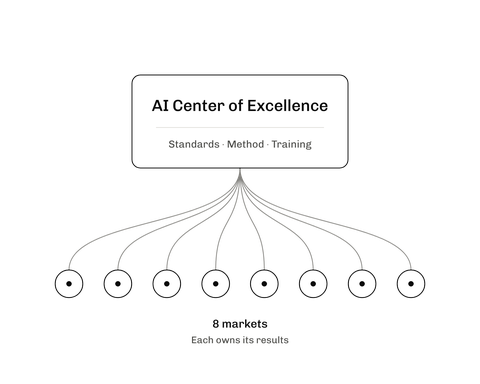

Njenga Kariuki
AI executive. At Amazon and AWS, I took AI products from research to customers, from Alexa to Amazon Bio Discovery, and was product lead for organizations of 100+ scientists and engineers. I now lead M-PESA Africa’s AI transformation across eight markets and 100M+ customers, reporting to the CEO. I wrote the Economy chapter of Stanford’s AI Index 2025.
Work
- M-PESA Africa2026–todayEnterprise AI across eight markets

- Amazon Bio Discovery2025–2026AI agents that design antibodies, tested in partner labs


- Stanford AI Index 20252024–2025The report’s chapter on AI and the economy, which I wrote

- Alexa Map View2023–2024A phone scan becomes a floor plan with every device on it

- Amazon Health AI2021–2023The organization behind Halo’s health measures from a phone camera

- Halo Movement2019–2021A movement assessment and program from phone video

- Halo Tone2018–2021How your voice sounds to others

- Halo Body2018–2021Body fat from phone photos

- Alexa Shopping2017–2018How Alexa understood spoken shopping requests


Career
| Years | What I led | Scale | Result |
|---|---|---|---|
| 2026–today | AI strategy and the AI Center of Excellence, M-PESA AfricaManaging Executive: Artificial Intelligence | 8 markets, 100M+ customers | In progress |
| 2025–2026 | Amazon Bio Discovery, AWSHead of Product, AWS Applied AI, Life Sciences | 100+ engineers, scientists and product managers | Launched April 2026 |
| 2024–2025 | The Economy chapter of Stanford’s AI Index 2025Stanford GSB, MSx (Sloan Fellow) | Cited by the Federal Reserve and the White House | |
| 2023–2024 | The Alexa app’s smart home experience and Alexa Map ViewSenior Manager, Technical Product Management, Smart Home AI | 50M+ monthly users | Map View launched, 2023 |
| 2021–2023 | Amazon Health AI, as its first product leadPrincipal Technical Product Manager | 100+ scientists and engineers; $100M+ a year | Three peer-reviewed validations |
| 2018–2021 | Amazon Halo, on its founding team: Body, Tone and MovementSenior Technical Product Manager | Launched 2020 and 2021; Amazon ended Halo in 2023 | |
| 2017–2018 | Alexa Shopping, as its first product leadTechnical Product Manager | A 10-person evaluation team | Shopping success from about 50% to 85% |
| 2015–2017 | Prime Now’s local-store and seller platform, as its founding product managerProduct Manager | Partner stores in 7 countries by 2017 | |
| 2014–2015 | Amazon Bedding & BathVendor Manager | $100M+ P&L | |
| 2012–2014 | Target’s Apple categorySenior Supply Chain Analyst | $700M+ category, about 1,800 stores | The iPad mini launch, 2012 |
| 2008–2012 | University of St. ThomasB.A., Business Administration, Operations Management |